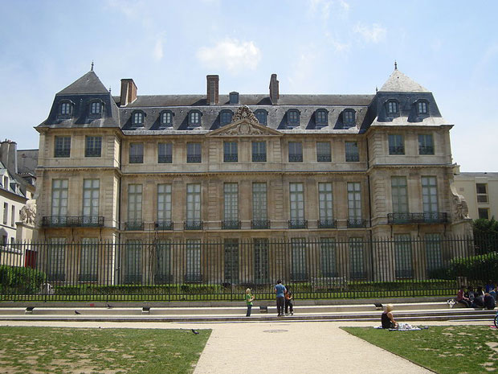

At last count, there were over 83 museums in Paris. (And that's not including the Cinematheque Francaise which for some reason isn't included in any of the official tourist information listing of National, Private, and City museums.) There are probably a few small private museums that fall below the radar, but not to worry. Those are the museums that will find you rather than vice-versa. No matter what's on your must-see list, there are bound to be tough decisions to make when your time is limited.

The Musée Picasso is an art gallery located in the Hôtel Salé in rue de Thorigny, in the Marais district of Paris. The hôtel particulier that houses the collection was built between 1656 and 1659 for Pierre Aubert, seigneur de Fontenay, a tax farmer who became rich collecting the gabelle or salt tax (the name of the building means "salted"). The architect was Jean Boullier from Bourges, also known as Boullier de Bourges; sculpture was carried out by the brothers Gaspard and Balthazard Marsy and by Martin Desjardins. It is considered to be one of the finest historic houses in the Marais.
The mansion has changed hands several times through both sales and inheritances. The occupants have included the Embassy of the Republic of Venice (1671), then François de Neufville, duc de Villeroi; it was expropriated by the State during the Revolution; in 1815 it became a school, in which Balzac studied; it also housed the municipal Ecole des Métiers d'Art. It was acquired by the City of Paris in 1964, and was granted historical monument status in 1968. The mansion was restored by Bernard Vitry and Bernard Fonquernie of the Monuments Historiques between 1974-1980.
The Hotel Salé was selected for the Musée Picasso after some contentious civic and national debate. A competition was held to determine who would design the facilities. The proposal from Roland Simounet was selected in 1976 from amongst the four that were submitted. Other proposals were submitted by Roland Castro and the GAU (Groupement pour l'Architecture et l'Urbanisme), Jean Monge, and Carlo Scarpa. For the most part, the interior of the mansion (which had undergone significant modifications) was restored to its former spacious state.
In 1968, France created a law that permitted heirs to pay inheritance taxes with works of art instead of money, as long as the art is considered an important contribution to the French cultural heritage. This is known as a dation, and it is allowable only in exceptional circumstances. Dominique Bozo, a curator of national museums, selected those works that were to become the dation Picasso. This selection was reviewed by Jean Leymarie and ratified in 1979. It contained work by Picasso in all techniques and from all periods, and is especially rare in terms of its excellent collection of sculptures. Upon Jacqueline Picasso's death in 1986, her daughter offered to pay inheritance taxes by a new dation. The collection has also acquired a number of works through purchases and gifts.
Picasso once said "I am the greatest collector of Picassos in the world." He had amassed an enormous collection of his own work by the time of his death in 1973, ranging from sketchbooks to finished masterpieces. The Musée Picasso contains more than 3000 different works of art by Pablo Picasso including drawings, ceramics, sculptures in wood and metal, and paintings. This is complemented by Picasso's own personal art collection of works by other artists, including Cézanne, Degas, Rousseau, Seurat, de Chirico and Matisse. It also contains some Iberian bronzes and a good collection of primitive art. One of the most impressive aspects of the museum is that it contains a large number of works which Picasso painted after his seventieth birthday.
The museum has also made a real effort to present accompanying information. For example, the work of cartoonists of the time who mocked or caricatured his work is displayed with Picasso's work from the 1950s. There are a few rooms with thematic presentations, but the museum largely follows a chronological sequence, displaying painting, drawings, sculptures and prints. Other items on display include photographs, manuscripts, newspaper clippings and photographs to provide additional contextual information.
The second floor has a special area set aside for temporary exhibitions and prints. The third floor contains the library, the documentation and archives department (reserved for research), and the curator's offices.